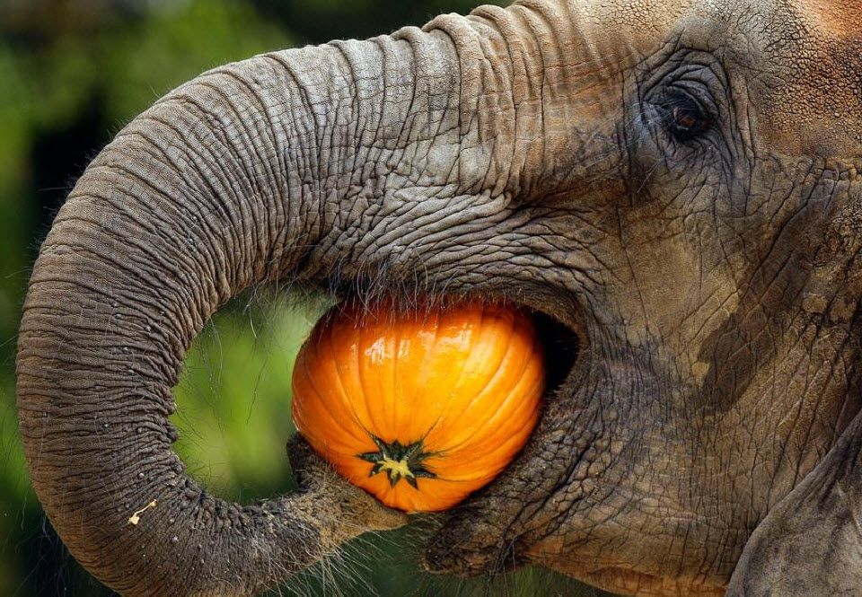

About elephants
Of the two species, African elephants are divided into two subspecies (savannah and forest), while the Asian elephant is divided into four subspecies (Sri Lankan, Indian, Sumatran and Borneo). Asian elephants have been very important to Asian culture for thousands of years – they have been domesticated and are used for religious festivals, transportation and to move heavy objects.
Diet
Staples: Grasses, leaves, bamboo, bark, roots. Elephants are also known to eat crops like banana and sugarcane which are grown by farmers. Adult elephants eat 300-400 lbs of food per day.
Population
At the turn of the 20th century, there were a few million African elephants and about 100,000 Asian elephants. Today, there are an estimated 450,000 - 700,000 African elephants and between 35,000 - 40,000 wild Asian elephants.
Behavior
Elephants form deep family bonds and live in tight matriarchal family groups of related females called a herd. The herd is led by the oldest and often largest female in the herd, called a matriarch. Herds consist of 8-100 individuals depending on terrain and family size. When a calf is born, it is raised and protected by the whole matriarchal herd. Males leave the family unit between the ages of 12-15 and may lead solitary lives or live temporarily with other males. Elephants are extremely intelligent animals and have memories that span many years. It is this memory that serves matriarchs well during dry seasons when they need to guide their herds, sometimes for tens of miles, to watering holes that they remember from the past. They also display signs of grief, joy, anger and play. Recent discoveries have shown that elephants can communicate over long distances by producing a sub-sonic rumble that can travel over the ground faster than sound through air. Other elephants receive the messages through the sensitive skin on their feet and trunks. It is believed that this is how potential mates and social groups communicate.